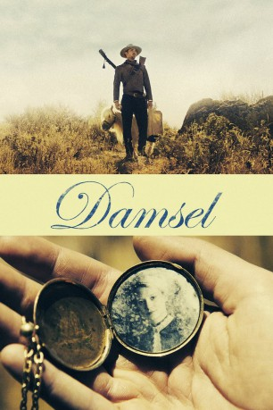

IMDB-Wertung: 5.6 / 10
IMDB-Wertung: 5.6 / 10  Metascore:
Metascore: 
Der Protagonist reitet durch den Wilden Westen, um mit Hilfe eines abgehalfterten Pfaffen die holde Maid zu retten und zu ehelichen. Ob diese das überhaupt möchte?
Alternativ: Damsel (Englischer Titel)
 IMDB-Wertung: 5.6 / 10 Metascore:
Der Protagonist reitet durch den Wilden Westen, um mit Hilfe eines abgehalfterten Pfaffen die holde Maid zu retten und zu ehelichen. Ob diese das überhaupt möchte?
Jahr: 2018
Dauer: 113 Minuten
FSK:
Land: USA Studio: Magnolia PicturesTonspuren:
Untertitel: Deutsch,
Auflösung: 1080p (1916x800) Größe: 4003 MB
Genre: Drama, Komödie, Western
Regisseur: David Zellner, Nathan Zellner
Drehbuch: David Zellner, Nathan Zellner
Soundtrack:
Darsteller:
 Robert Pattinson als Samuel Alabaster
Robert Pattinson als Samuel Alabaster Mia Wasikowska als Penelope
Mia Wasikowska als Penelope Robert Forster als Old Preacher
Robert Forster als Old PreacherDatei: X:\HD-Western-2000-2015\Smoking Gun - Nicht jede Frau will gerettet werden (2018, FSK, 1916x800).mkv seit 03.04.2019
Festplatte: HD Eastern+Western
 Es gibt insgesamt 61 Filme in der Gruppe 'HD-Western-2000-2015'
Es gibt insgesamt 61 Filme in der Gruppe 'HD-Western-2000-2015'